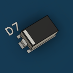
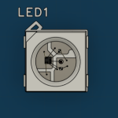
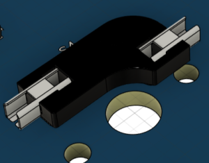
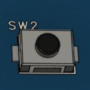
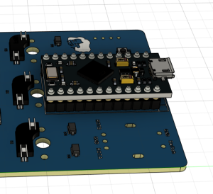
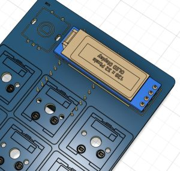
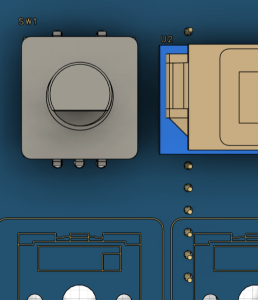
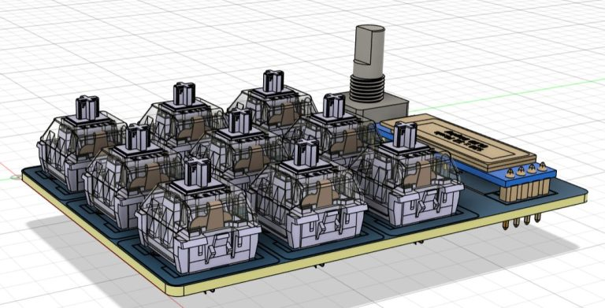

Step 1: Soldering
Assembling the Macropad V2 components.
Kit contents
- 1x PCB
- 9x switches (clicky, linear or tactile)
- 9x hot swaps
- 1x 3 × 4 × 2 mm SMD switch
- 1x 0.91″ OLED display (128 × 32)
- 1x rotary encoder
- 9x SOD-123 SMD diodes
- 4x LEDs WS2812B
- 1x Arduino Pro Micro
- 1x USB-C cable
Assembly guide
Part 1: Diodes
Solder diodes D1 to D9. Make sure that the stripe on each diode is on the same side as the stripe shown on the PCB.

Part 2: LEDs
Solder LEDs LED1 to LED4. The small dot in the corner of each LED must be aligned with the small rectangle on the PCB.

Part 3: Hot swaps
Solder hot swaps S1 to S9.

Part 4: SMD switch
Solder the 3 × 4 × 2 mm SMD switch onto SW2.

Part 5: Arduino Pro Micro
Solder the Arduino Pro Micro on the same side as the components soldered previously. Then cut the pins on the other side, leaving 1 to 2 mm protruding, and apply insulating tape over the pins in the U2 rectangle.

Part 6: OLED display
Solder the OLED display onto U2.

Part 7: Rotary encoder
Solder the rotary encoder onto SW1.
⚠ Pay close attention when soldering on the OLED screen side!

Part 8: Switches
Add the switches.

The assembly is now complete. You can then 3D-print the keycaps, the case and a cap for the rotary encoder!
← Back to Macropad V2